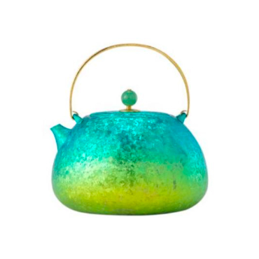
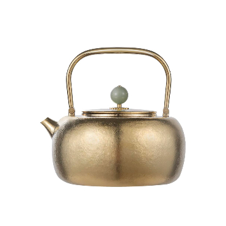
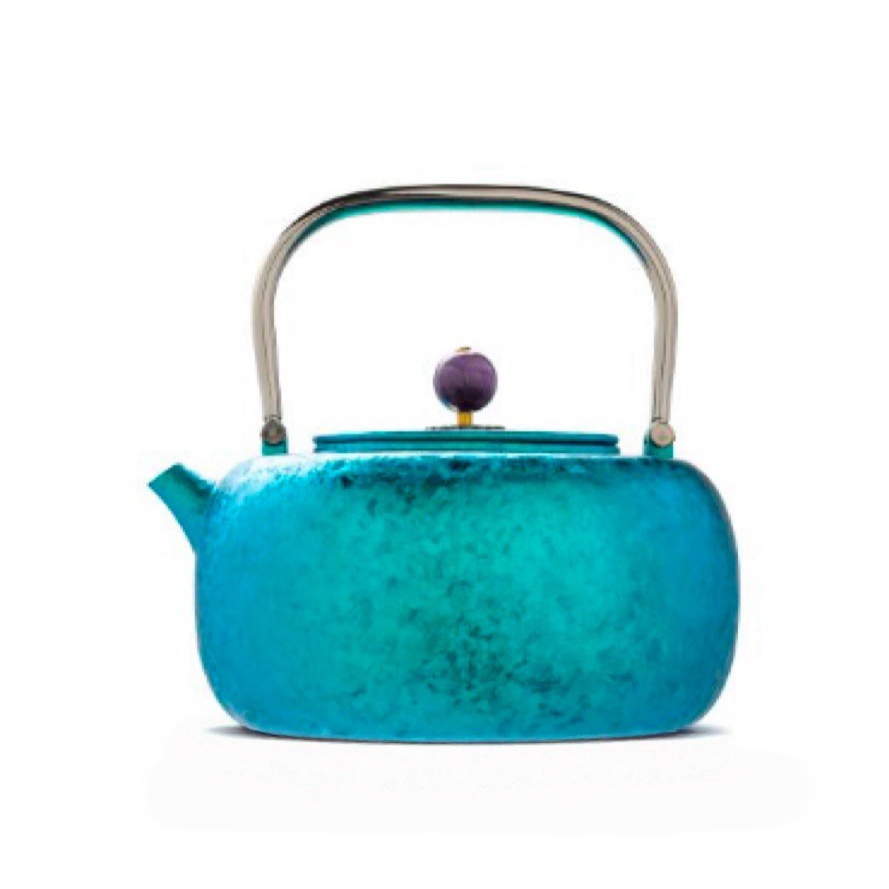

鈦（化學符號 Ti），一種銀白色稀貴金屬，原子序數 22，位於化學元素週期表第 4 週期、第 IVB 族。具有熔點高、密度小、強度大、耐腐蝕、生物相容性好、超導、形狀記憶與儲氫等一系列重要特性，是一個國家重要的戰略材料。
親生物性
被世界醫學界公認為「生物金屬」。抗酸鹼腐蝕，對人的植物神經與味覺神經無不良影響，與人體相容性佳，廣泛用於股骨頭、髖關節、顱骨、心瓣膜等醫療植入，不易發生過敏及排異現象。
抗食腐性
在空氣或含氧介質中，鈦表面會生成一層緻密穩定、附著性強、保護性佳的氧化膜，能有效抵禦各種強酸、強鹼甚至王水的侵蝕；即使受外力破壞，也會迅速重生。
不溶出性
用鈦製造壺具，在烹飪及儲存茶水過程中，金屬離子不溶出，保持茶水原味，口感更好。
輕量高強
鈦密度 4.51 g/cm³，比強度為常用工業合金中最大，是宇航工業必備結構材料。熔點高達 1668（±5）°C，於 −253～600°C 間維持高強韌性。

Core Features
Photocatalysis
鈦在大氣中會形成氧化鈦，經特定工法可生成二氧化鈦，並利用光能進行催化反應，通常稱為光觸媒，能有效抑制細菌滋生並去除異味。
光觸媒的作用還能深度淨化並轉換酒品中的醛類及其他雜質，降低辛辣與灼熱等刺激感，使酒的香氣更加柔和醇厚——此為國外酒廠加速酒質老化與醇化的重要工藝之一。然而並非所有鈦製品都能達到此效果，觸發反應的程度完全取決於二氧化鈦的程度及相關製程條件。

Preciousness
鈦的提煉技術門檻更高且更為複雜，需經過多重關卡才能最終轉化為可用於加工的鈦材料。鈦的冶煉過程經一系列還原與提純程序，最終生成海綿鈦；隨後被熔煉並成型為鈦錠，再依不同生產需求，進一步加工成各式各樣的鈦材料。
純鈦的材料特性與一般金屬不同，使其在拉伸、延展等塑形加工時容易產生磨損；後續的車削、研磨與拋光等表面處理，由於鈦的熱反應高於一般鋼材，使加工過程更加困難、成品率較低。多種因素綜合，導致鈦材料的價格一直居高不下。
Vacuum Recrystallization
博友製鈦專利級表面工法，突破普通鈦壺表面硬度低的難題。
普通鈦壺、純鈦製品的表面硬度較低，抗磨損性能較差，色澤偏灰暗。使用普通純鈦製造壺具，摩擦程度較大，容易出現磨損、吸附污垢、不易清潔等缺陷。
基於 1000°C 以上高溫及真空技術環境要求，博友製鈦於鈦壺內外壁表面形成高級質感的結晶紋理，大幅提升表面硬度，兼具美觀雅緻與經久耐用。同時不易沾染污垢，能長時間保持乾淨與美觀——相較市面上大部分鈦壺，整體實用性與使用體驗全面優化。
